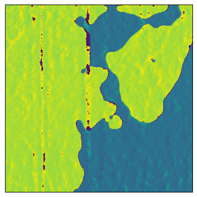
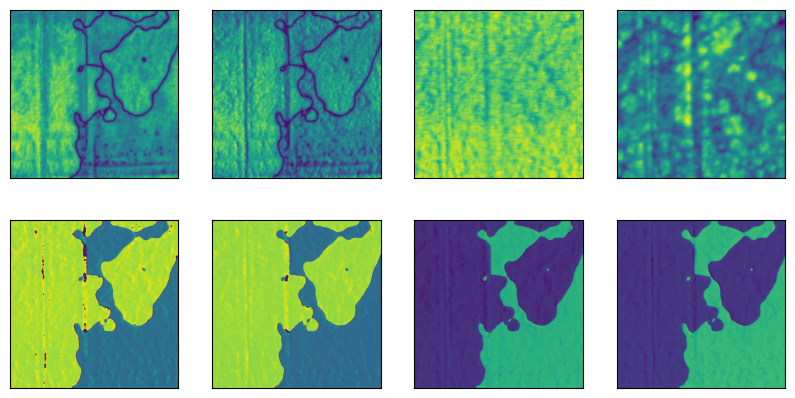
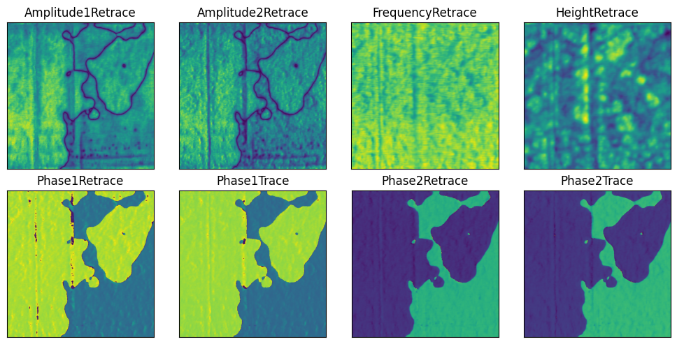
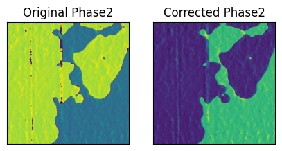
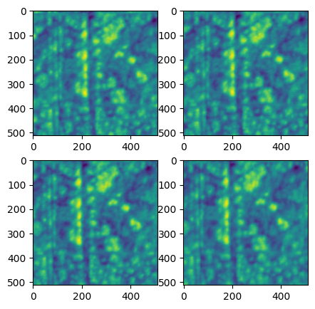
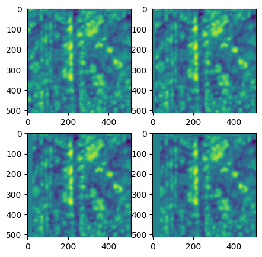
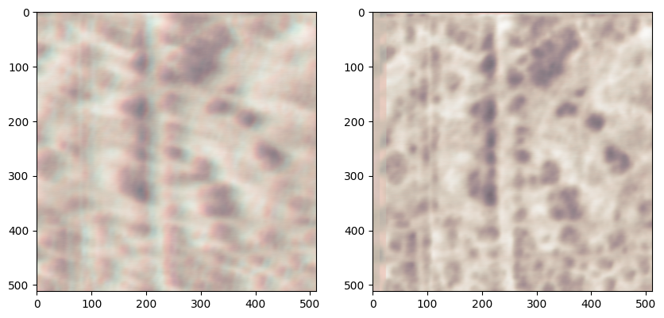

Walkthrough: How Does Hystorian Works?
from hystorian.io import HyFile, HyPath
from pathlib import Path
import numpy as np
import matplotlib.pyplot as plt
import glob
import os
# Cleanup the environment:
os.remove('pfm1.hdf5') if os.path.exists('pfm1.hdf5') else None
os.remove('pfm2.hdf5') if os.path.exists('pfm2.hdf5') else None
1. How to extract the data?
Using HyExtractor
The simplest (but not recommended) way to extract the data is to use the
HyExtractor class. It will extract the data from a supported file
and return a dictionary with the data, metadata, and attributes.
from hystorian.io import HyExtractor
datapath1 = "path/to/your/file.hystorian"
d = HyExtractor.extract(datapath1)
To access the data, metadata, and attributes, you can use the following attributes:
d.data # The data extracted from the file
d.metadata # The metadata of the file
d.attributes # The attributes of the file
This can be used for quick and dirty extraction of the data, during the exploratory phase of your project. However, it is not recommended for production code, as it does not allow to store the future processing in the same file, and does not allow to store the data in a structured way.
Using HyFile
The proper way to extract the data is to use the HyFile class. It
allows to store the data, metadata, and attributes in a structured way,
and allows to store the future processing in the same file.
HyFile as a __enter__ and __exit__ methods, so it can be used in
a with statement. This will ensure that the file is properly closed
after the processing is done.
HyFile support the following modes to open the file: - r: Readonly,
file must exist. (default) - r+: Read/write, file must exist. -
w: Create file, truncate if exists. - w- or x: Create file,
fail if exists. - a : Read/write if exists, create otherwise.
(Note: Due to a bug, r+ works like a in the current version of
Hystorian, this will be fixed soon)
with HyFile('pfm1.hdf5', 'a') as f: # The file did not exist before so it is created
... # We do nothing
Now, to add the data from an IBW file to a HDF5 file, you can use the following code:
datapath1 = Path("data/P3_00_Const_3000mV_0032.ibw") # This is the path to the IBW file you want to add
with HyFile('pfm1.hdf5', 'r+') as f:
f.extract_data(datapath1)
Using merge() it is possible to merge two hdf5 files together.
datapath2 = Path("data/P3_00_Const_3000mV_0034.ibw")
with HyFile('pfm2.hdf5', 'r+') as f:
f.extract_data(datapath2)
with HyFile('pfm1.hdf5', 'r+') as f:
f.merge('pfm2.hdf5')
os.remove('pfm2.hdf5')
2. How to read the data?
And now pfm1.hdf5 contains the data from the IBW file, and you can
access it using the HyFile class, and the
read(path = None, search = False) method.
path is the path to the Group or Dataset you want to read. If the
value is None, read the root of the folder. If the path lead to Groups,
it will return a list of the subgroups, if it lead to a Dataset, it will
return the data as a numpy array.
with HyFile('pfm1.hdf5', 'r+') as f:
print(f.read())
print(f.read('datasets'))
print(f.read('datasets/P3_00_Const_3000mV_0032'))
plt.imshow(f.read('datasets/P3_00_Const_3000mV_0032/Phase1Retrace'))
plt.xticks([])
plt.yticks([])
['datasets', 'metadata', 'process']
['P3_00_Const_3000mV_0032', 'P3_00_Const_3000mV_0034']
['Amplitude1Retrace', 'Amplitude2Retrace', 'FrequencyRetrace', 'HeightRetrace', 'Phase1Retrace', 'Phase1Trace', 'Phase2Retrace', 'Phase2Trace']

Regex search
You can set search=True to search all the datasets which match with
the string you pass. For example read('datasets/*', search=True)
will return all the datasets in the datasets group.
You can also use the path_search(path) method to search for a path
in the file. It will return a list of all the paths which match with the
string you pass. Both read() and path_search() methods uses
regex formatting. I would recommend using https://regex101.com/ to check
your regex rule.
Attention
Note: Be carefull, in regex what we usually use as a wildcard is not * but .*.
with HyFile('pfm1.hdf5', 'r+') as f:
print(f.path_search('datasets/.*'))
print('---')
print(np.shape(f.read('datasets/.*', search=True)))
[HyPath('datasets/P3_00_Const_3000mV_0032/Amplitude1Retrace'), HyPath('datasets/P3_00_Const_3000mV_0032/Amplitude2Retrace'), HyPath('datasets/P3_00_Const_3000mV_0032/FrequencyRetrace'), HyPath('datasets/P3_00_Const_3000mV_0032/HeightRetrace'), HyPath('datasets/P3_00_Const_3000mV_0032/Phase1Retrace'), HyPath('datasets/P3_00_Const_3000mV_0032/Phase1Trace'), HyPath('datasets/P3_00_Const_3000mV_0032/Phase2Retrace'), HyPath('datasets/P3_00_Const_3000mV_0032/Phase2Trace'), HyPath('datasets/P3_00_Const_3000mV_0034/Amplitude1Retrace'), HyPath('datasets/P3_00_Const_3000mV_0034/Amplitude2Retrace'), HyPath('datasets/P3_00_Const_3000mV_0034/FrequencyRetrace'), HyPath('datasets/P3_00_Const_3000mV_0034/HeightRetrace'), HyPath('datasets/P3_00_Const_3000mV_0034/Phase1Retrace'), HyPath('datasets/P3_00_Const_3000mV_0034/Phase1Trace'), HyPath('datasets/P3_00_Const_3000mV_0034/Phase2Retrace'), HyPath('datasets/P3_00_Const_3000mV_0034/Phase2Trace')]
---
(16, 512, 512)
Using search=True allows for an easy way to access all datasets in a
group without having to know their exact names.
fig, axes = plt.subplots(2, 4, figsize=(10, 5))
axes = axes.flatten()
with HyFile('pfm1.hdf5', 'r') as f:
for i, d in enumerate(f.read('datasets/.*0032.*', search=True)):
axes[i].imshow(d)
axes[i].set_xticks([])
axes[i].set_yticks([])

Using path_search instead of read(path, search=True) allows you
to get the paths of the datasets, which can be useful if you want to
display the names of the datasets in a plot for example.
fig, axes = plt.subplots(2, 4, figsize=(10, 5))
axes = axes.flatten()
with HyFile('pfm1.hdf5', 'r') as f:
for i, p in enumerate((f.path_search('datasets/.*0032.*'))):
d = f.read(p)
axes[i].imshow(d)
axes[i].set_title(p.stem)
axes[i].set_xticks([])
axes[i].set_yticks([])
plt.tight_layout()

3. How to modify the data?
The Dirty Way
As you can see the Phase2 channel has a case of phase unwrapping.
Here I’ll show you how to use one of the many tools in hystorian to
correct this issue, and how to store the processing in the hdf5 file.
The easiest way is to simply manipulate the numpy array provided by the
read() method,
however this is not the recommended way to do it, as it does not allow to store the processing in the file. It is still usefull though during the exploratory phase of your project, to avoid writting a lot of test manipulations into the hdf5 file.
Warning
Using this method will not save the processing into the hdf5 file.
from hystorian.processing import spm
with HyFile('pfm1.hdf5', 'r') as f:
phase2 = f.read('datasets/P3_00_Const_3000mV_0032/Phase1Retrace')
corrected_phase2 = spm.shift_and_wrap_phase(phase2)
fig, axes = plt.subplots(1, 2, figsize=(5, 2.5))
axes[0].imshow(phase2)
axes[0].set_title('Original Phase2')
axes[1].imshow(corrected_phase2)
axes[1].set_title('Corrected Phase2')
axes[0].set_xticks([])
axes[0].set_yticks([])
axes[1].set_xticks([])
axes[1].set_yticks([]);

The Proper Way
Now that we have a process that work well, we want to save it into the
hdf5 file. To do so we will use the apply() method of the HyFile
class. This method allows to apply a function to a dataset, and store
the result in the file.
Attention
Something to be carefull of, is that when you use apply()
you CANNOT pass a string as the path of the dataset, you must use a
HyPath object.
This is because the apply() can take any function as first argument,
and some of these functions may need a string as an argument, so it
is necessary to differentiate between an arbitrary string and a path
to a dataset.
with HyFile('pfm1.hdf5', 'r+') as f:
f.apply(spm.shift_and_wrap_phase,
HyPath('datasets/P3_00_Const_3000mV_0032/Phase2Retrace'))
However we would like to modify all the datasets that contain a phase.
Thankfully, it is straightforward to do so using multiple_apply()
and path_search().
with HyFile('pfm1.hdf5', 'r+') as f:
f.multiple_apply(spm.shift_and_wrap_phase, f.path_search("datasets.*Phase.*"))
The issue now is that we have a folder in process that is useless.
It is easy to delete a folder in the hdf5 file using the delete()
method of the HyFile class. This method allows to delete a path from
the file, and if you set renumber=True, it will renumber the paths
in process after the deleted path.
with HyFile('pfm1.hdf5', 'r+') as f:
f.delete(1, renumber=True)
# Equivalent to:
# f.delete(f.path_search("process.*001.*")[0], renumber=True)
Distortion Correction
from hystorian.processing.distortion import find_transform
from hystorian.processing.distortion import custom_warp as hywarp
Use distortion correction with apply and multiple_apply
filelist = glob.glob('data/*.ibw')
os.remove('distort_demo.hdf5') if os.path.exists('distort_demo.hdf5') else None
with HyFile('distort_demo.hdf5', 'r+') as f:
for file in filelist:
f.extract_data(file)
Lets have a look at the topography, which we will use to compute the correction.
(A channel that should not change during the whole experiment is required for the correction to work well)
fig, axes = plt.subplots(2,2, figsize=(5,5))
axes = np.ravel(axes)
with HyFile('distort_demo.hdf5', 'r') as f:
for i, h_path in enumerate(f.path_search('datasets.*HeightRetrace')):
axes[i].imshow(f.read(h_path))

To use find_transform(ir, iw, method, **kwargs), it is currently
bettere to use apply and a for loop.
For now, multiple_apply work when the looped parameter is the first
one. In the case of find_transform() we are looping over iw.
with HyFile('distort_demo.hdf5', 'r+') as f:
heights = f.path_search('datasets.*Height.*')
increment_proc = True
for height in heights:
f.apply(find_transform,
heights[0],
height,
method="CENSURE",
increment_proc=increment_proc,
output_names='/'.join(height.path.split('/')[1:-1]))
if increment_proc:
increment_proc = False
We can use multiple_apply with hywarp
Hint
I would not recommend using warp() from skimage as a
replacement for hywarp(). It does not use the same convention for the
axis (x,y) vs (i,j), and moreover in the backend hywarp() uses
affine_transform and geometric_transform, which is more performant
than warp.
with HyFile('distort_demo.hdf5', 'r+') as f:
mat_paths = f.path_search('.*find_transform.*')
for mat_path in mat_paths:
output_names = ['/'.join(i.split('/')[1:]) for i in f.path_search(f'datasets/.*{mat_path.split('/')[-1]}.*')]
f.multiple_apply(hywarp,
f.path_search(f'datasets/.*{mat_path.split('/')[-1]}.*'),
mat=f.read(mat_path),
output_names = output_names,
increment_proc=False)
fig, axes = plt.subplots(2,2, figsize=(5,5))
axes = np.ravel(axes)
with HyFile('distort_demo.hdf5', 'r') as f:
for i, h_path in enumerate(f.path_search('.*process.*custom_warp.*HeightRetrace')):
axes[i].imshow(f.read(h_path))

fig, axes = plt.subplots(1,2, figsize=(10,5))
with HyFile('distort_demo.hdf5', 'r') as f:
for idx, cmap in zip([32, 34, 36], ['Greens', 'Blues', 'Reds']):
axes[0].imshow(f.read(f.path_search(f'datasets.*00{idx}.*HeightRetrace')[0]), cmap=cmap, alpha=0.3)
axes[1].imshow(f.read(f.path_search(f'process.*custom_warp.*00{idx}.*HeightRetrace')[0]), cmap=cmap, alpha=0.3)
